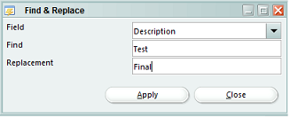

Find & Replace
Menu path: Tools > Find & Replace

The Find & Replace function is accessed via the right-click menu.
This functionality allows you to quickly replace part of a text with a new value.
- Field Select the field where you want to replace values
- Find Enter the value to replace
- Replacement Enter the replacement for the defined value (the Find)
Preview
After setting the correct values and pressing on "Apply" a preview is shown.
Here you can see exactly what will be changed. Also you still have the ability to exclude items
from the replacement process by unchecking the checkbox of the specific item.